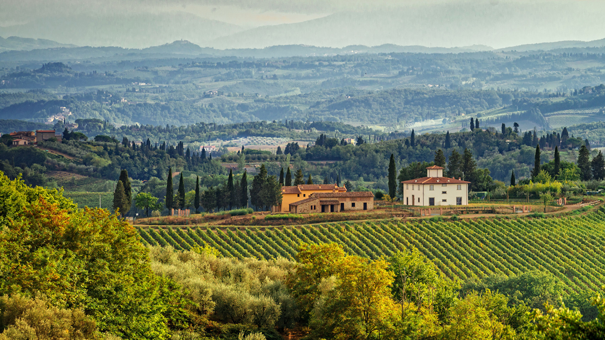
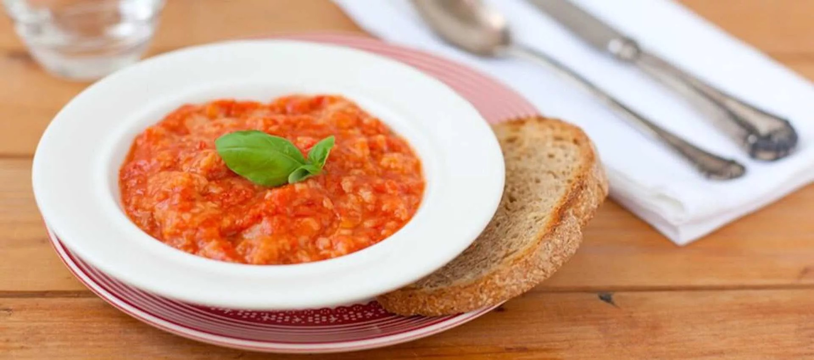
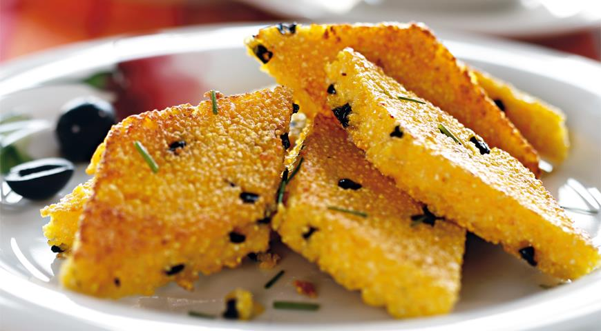
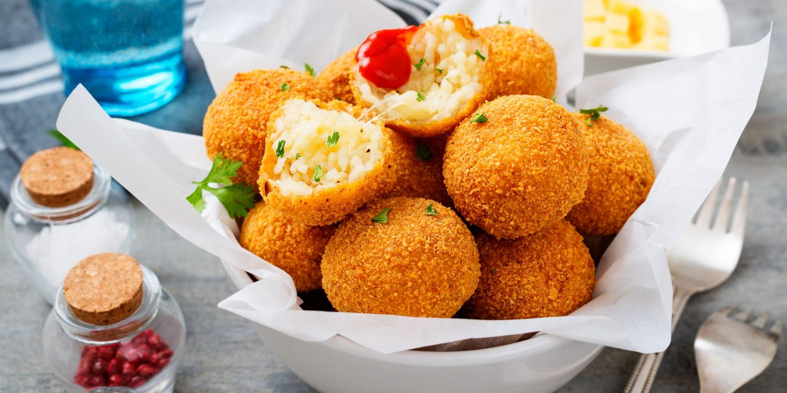
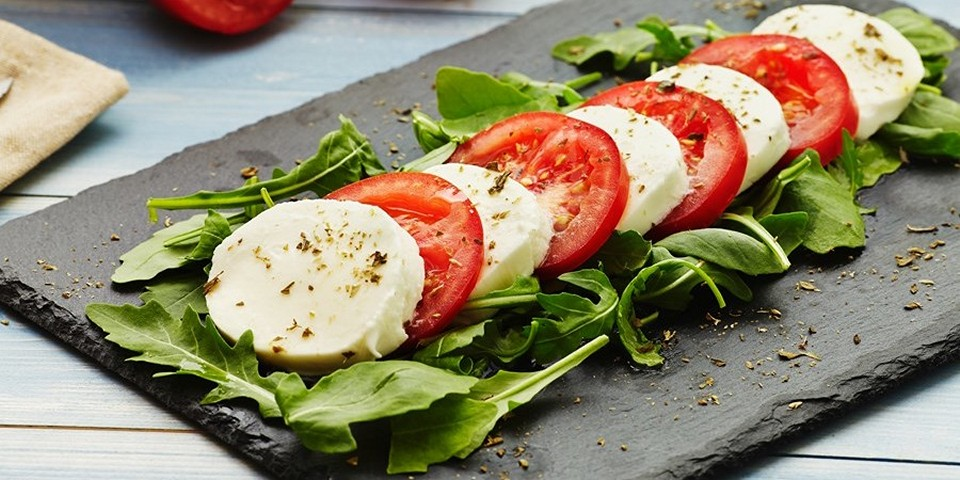
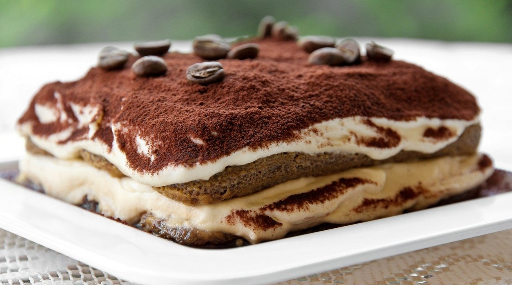
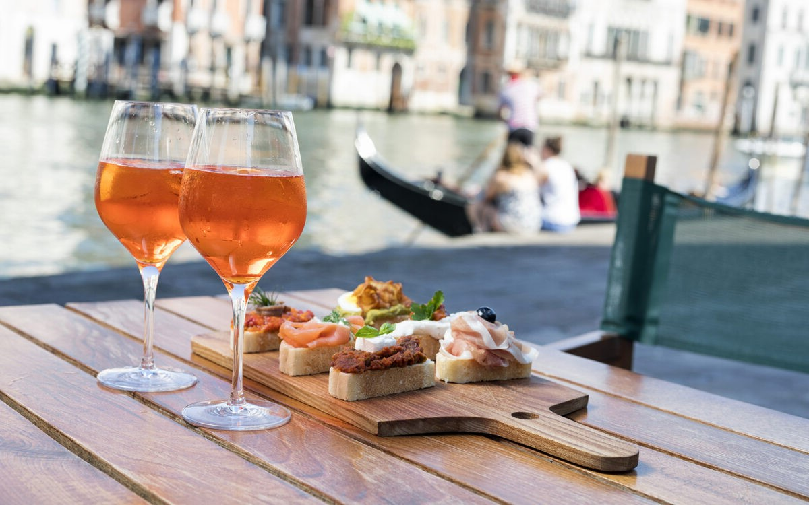
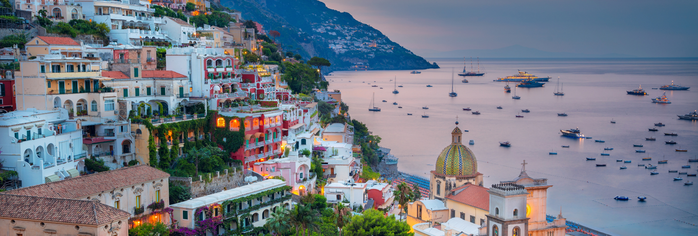
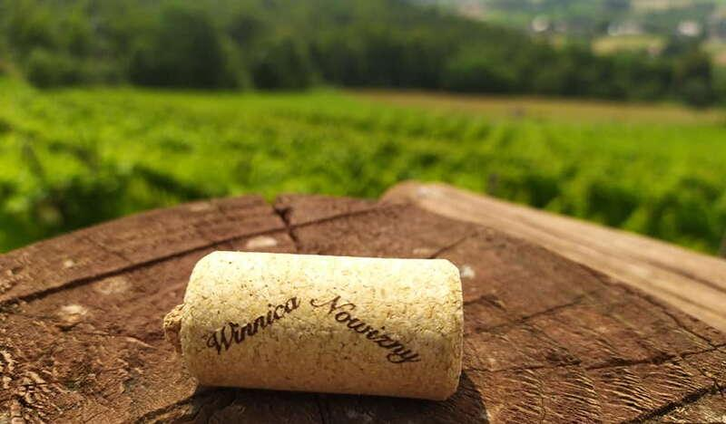

Ласкаво просимо
Подумайте про Італію, швидше за все ви спочатку подумаєте про їжу, а вже потім про всі інші прекрасні речі, які в неї є. Італійська кухня стоїть пліч-о-пліч із французькою за всесвітньою славою та вживаністю. Піца, паста та томатний суп стали стравами світу, які готують не тільки в ресторанах, а й на більшості домашніх кухонь. Незалежно від того, в якій чистині світу чи Європи ви виросли та народилися, всі від дітей до дорослих знайомі з італійськими стравами. Догори

Блог

Піца класична та історія її популярності
Класична піца зі свіжої моцарели, яскраво-червоних помідорів, ароматного базиліка та оливкової олії на пухкому тісті також називається піцою Маргарита або Неаполітанською.

Північна полента
Полента виглядає як проста кукурудзяна каша, але за її простотою ховається неперевершений смак та простір для різноманітних кулінарних експериментів.Як пов’язані Сицилія і аранчині
Сицилія багато чим славиться у світі, однією з цих причин є аранчіні. Говорять, спробувавши один раз цю страву, вже ніколи її не забудеш.


Капрезе – найіталійська страва
Капрезе – класична італійська страва, яка завоювала популярність у всьому світі. Салат готується всього з декількох інгредієнтів: помідори, моцарелла і базилік. Так це кольори італійського прапора.Справжнє тірамісу на десерт, а не щось вакуумно-запаковане з магазину
Тірамісу — один із найвідоміших, найпопулярніших і найніжніших італійських десертів без випічки, які їдять ложкою у світі.


Топ-5 найпопулярніших коктейлів прямісінько із Італії
Кожна поважаюча себе людина хоча б раз у житті повинна була спробувати італійський коктейль. Вони запросто подарують вам смак самої Італії, спекотного літнього вечора та морського бризу.Про нас


Це веб-сайт для кухарів, студентів, любителів їжі та звичайних людей, присвячений дослідженню італійських страв та напоїв. Тут ви можете переглянути теми про різноманітні італійські страви та коктейлі, їх рецепти, історію чи цікаві факти, познайомитися з самим сайтом та зв’язатися з нами.
Цитата
«Buon cibo. Buon vino. Buon amici» — «Добра їжа. Гарне вино. Хороші друзі.»Контакти
Зі всіма питаннями можна звертатися
за такими контактами:
Email:
levytska.anastasiia@kitz.nau.edu.ua